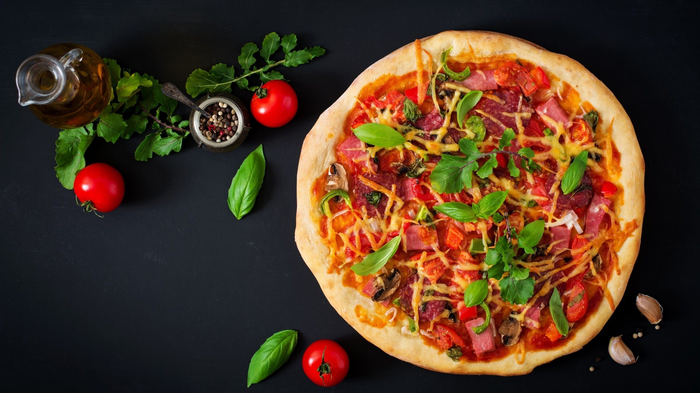
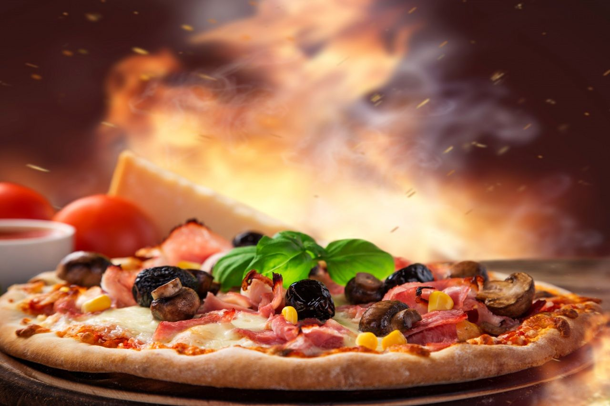

Pizza, dish of Italian origin consisting of a flattened disk of bread dough topped with some combination of olive oil, oregano, tomato, olives, mozzarella or other cheese, and many other ingredients, baked quickly—usually, in a commercial setting, using a wood-fired oven heated to a very high temperature—and served hot.
One of the simplest and most traditional pizzas is the Margherita, which is topped with tomatoes or tomato sauce, mozzarella, and basil. Popular legend relates that it was named for Queen Margherita, wife of Umberto I, who was said to have liked its mild fresh flavour and to have also noted that its topping colours—green, white, and red—were those of the Italian flag.
Italy has many variations of pizza. The Neapolitan pizza, or Naples-style pizza, is made specifically with buffalo mozzarella (produced from the milk of Italian Mediterranean buffalo) or fior di latte (mozzarella produced from the milk of prized Agerolese cows) and with San Marzano tomatoes or pomodorino vesuviano (a variety of grape tomato grown in Naples).
Vegetarian pizza is rich in green vegetables. After mixing all the ingredients, it is baked by adding onion, capsicum, tomato and mushroom, with garlic sauce spread all over the pizza base.
According to Pizzamania's nutritional information, one slice from a medium hand-tossed cheese pizza (one-eighth of the pie) contains 220 calories, 26 grams of carbohydrates, 8 grams of fat, 4 grams of saturated fat, etc.
Pepperoni is an American variety of salami, made from cured pork and beef seasoned with paprika or chili pepper. Pepperoni is typically soft, slightly smoky, and bright red in color.
The average slice of D'bankah Special pizza has 12 grams of protein, according to Chelsey Amer, a registered dietitian. Pizza can help you absorb Lycopene, an antioxidant found in brightly-colored fruits and vegetables, that may lower blood pressure rates.